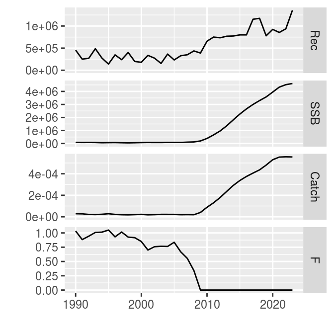
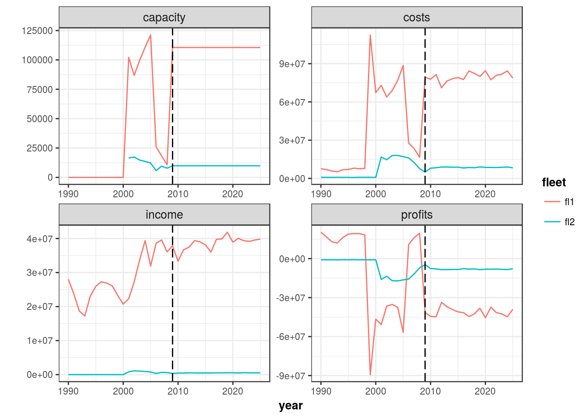
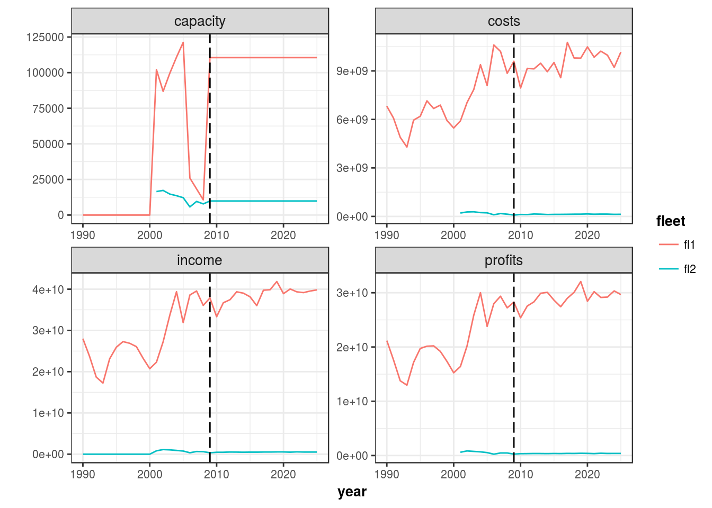
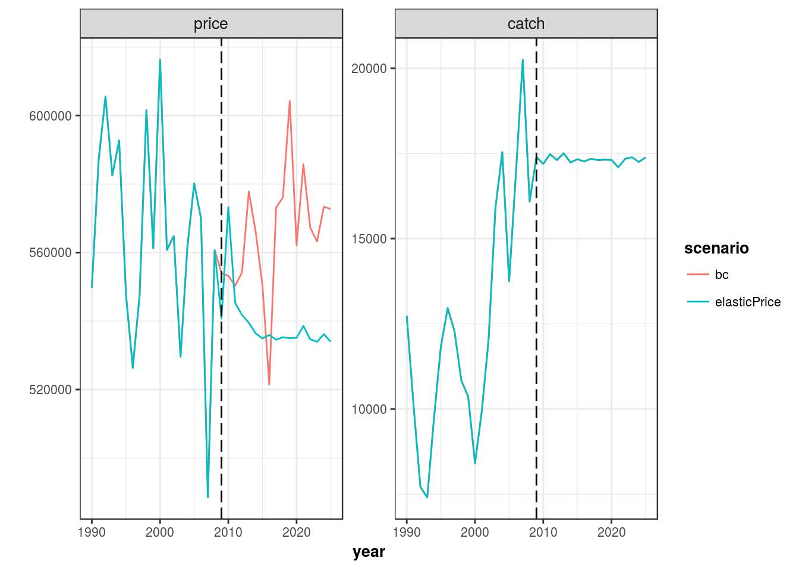
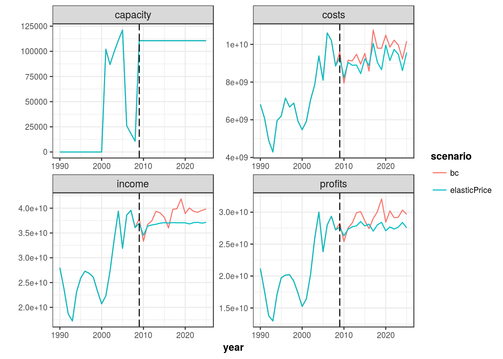
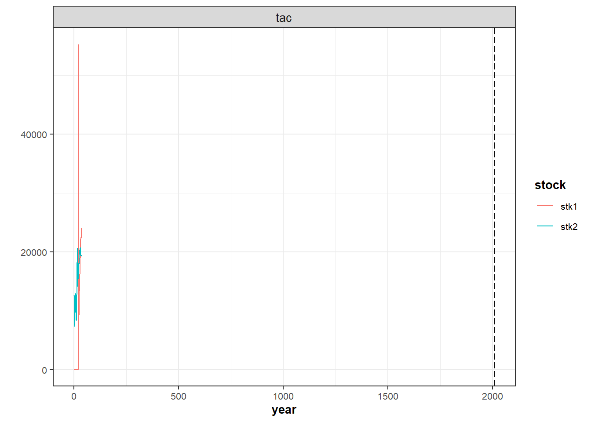
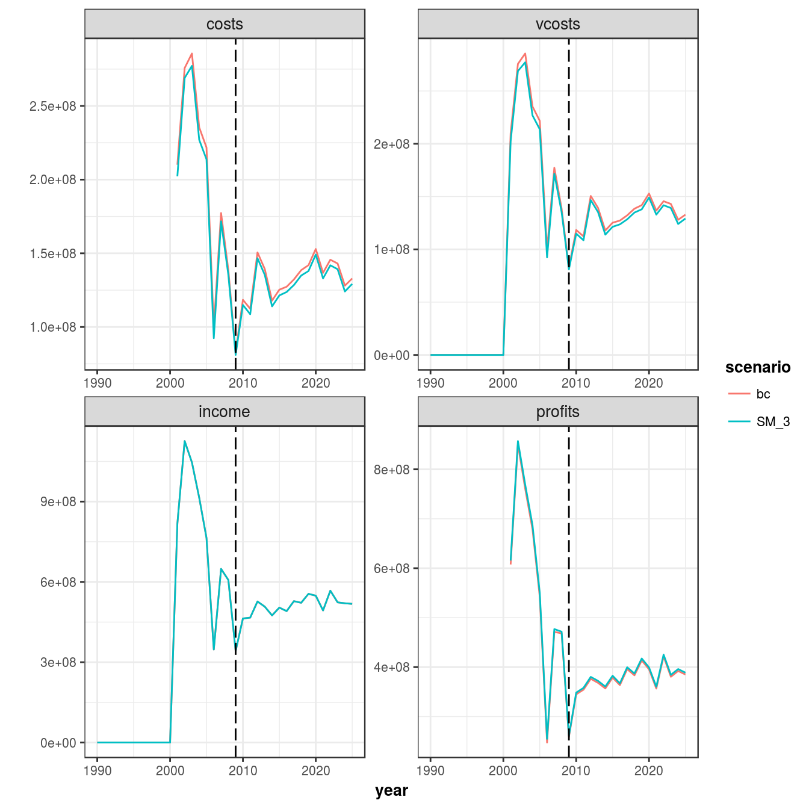
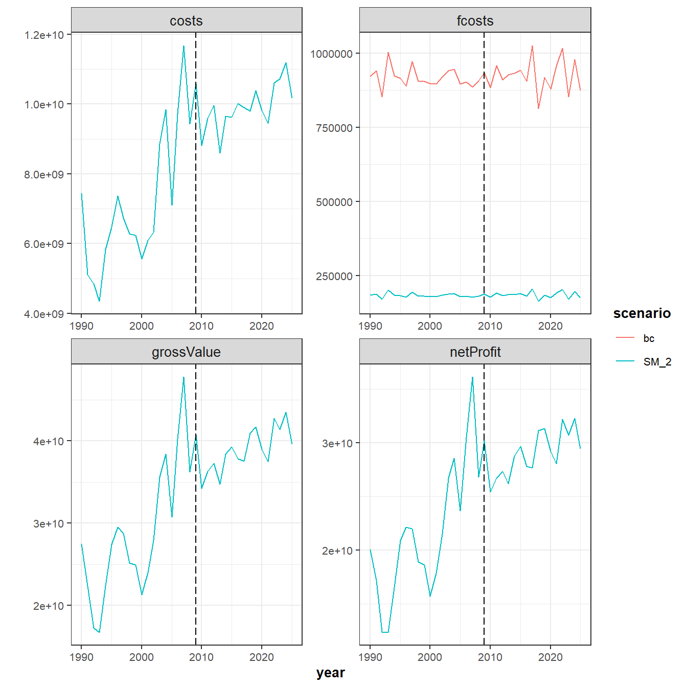

FLBEIA - TUTORIAL THREE. Multi example.
02 Oct, 2017

Aim
FLBEIA provides a battery of tutorials for learning how to use this software. In this tutorial an example, named multi is run in FLBEIA. Then, the outputs of FLBEIA are explored, summarized and plotted. Once the user has understood the structure and outputs of FLBEIA, let’s start playing! Several scenarios are run changing and adjusting several data and functions that FLBEIA provides. Scenarios are compared in order to visualize the effects of the changes done in each scenario. In the current tutorial, the scenarios will be related to the economic issues of the model.
Required packages to run this tutorial
To follow this tutorial you should have installed the following packages
if you are using Windows, please use 32-bit R version because some of the packages do not work in 64-bit.
library(devtools)
install_github("flr/FLBEIA")Load all necessary packages.
# This chunk loads all necessary packages.
library(FLBEIA)
library(FLXSA)
library(FLash)
library(ggplotFL)EXAMPLE: 2 stocks, 2 fleets with two metiers each, 4 seasons and 1 iteration.
This dataset has 2 stocks, one stk1 is age structured and the second one stk2 is aggregated in biomass.
- Historic data 1990-2008 and projection 2009-2025.
- Operating model: Population dynamics
- stk1: Age Structured Population Growth. Beverton and Holt.
- stk2: Biomass Dynamic Population Growth. Pella-Tomlinson.
- Management Procedure
- Perfect observation & No assesSMent
- HCR
- stk1: IcesHCR
- stk2: Annual TAC
- Fleets dynamics
- fl1: Simple Mixed Fisheries Behaviour. Two metiers.
- fl2: Fixed effort. Two metiers.
Load data
rm(list=ls())
data(multi)With the ls() command we can see the objects stored in multi, which are those need to call to FLBEIA.
ls()character(0)# Show the class of each of the objects.
sapply(ls(), function(x) class(get(x)))named list()Run FLBEIA.
Run FLBEIA with multi and explore the output.
SM <- FLBEIA(biols = multiBio, # FLBiols object with 2 FLBiol element for stk1.
SRs = multiSR, # A list with 1 FLSRSim object for stk1.
BDs = multiBD, # A list with 1 FLBDSim object for stk2.
fleets = multiFl, # FLFleets object with on fleet.
covars = multiCv, # A list with socio - economic data.
indices = NULL, # Indices not available.
advice = multiAdv, # A list with two elements 'TAC' and 'quota.share'.
main.ctrl = multiMainC, # A list with one element to define the start/end of the simulation.
biols.ctrl = multiBioC, # A list with one element to select the model to simulate the stock dynamics.
fleets.ctrl = multiFlC, # A list with several elements to select fleet dynamic models and store additional parameters.
covars.ctrl = multiCvC, # Covars control (additional data for capital dynamics)
obs.ctrl = multiObsC, # A list with one element to define how the stock observed ("PerfectObs").
assess.ctrl = multiAssC, # A list with one element to define how the stock assesSMent model used ("NoAssesSMent").
advice.ctrl = multiAdvC) # A list with one element to define how the TAC advice is obtained ("IcesHCR").FLBEIA returns a list with several objects, let’s print the names of the objects and its class
names(SM)[1] "biols" "fleets"
[3] "covars" "advice"
[5] "stocks" "indices"
[7] "fleets.ctrl" "pkgs.versions"Summarizing results
FLBEIA has predeterminated functions to create summary data frames (biological, economic, and catch), in two formats:
- Long format: where all the indicators are in the same column.There is one column, indicator, for the name of the indicator and a second one for the numeric value of the indicator.
- Wide format: where each column correspond with one indicator. The long format it is recommendable to work with ggplot2 functions while the wide format it is more efficient for memory allocation and speed of computations.
Note that in this example the covars object contents information on costs.
Long format.
SM_bio <- bioSum(SM) # Data frame (DF) with the biological indicators.
SM_adv <- advSum(SM) # DF with the indicators related with the management advice (TAC).
SM_flt <- fltSum(SM) # DF with the indicators at fleet level.
SM_fltStk <- fltStkSum(SM) # DF with the indicators at fleet and stock level.
SM_mt <- mtSum(SM) # DF with the indicators at fleet.
SM_mtStk <- mtStkSum(SM) # DF with the indicators at fleet and metier level.
SM_vessel <- vesselSum(SM) # DF with the indicators at vessel level.
SM_vesselStk <- vesselStkSum(SM) # DF with the indicators at vessel and stock level.
SM_npv <- npv(SM, y0 = '2014') # DF with the net present value per fleet over the selected range of years.
SM_risk <- riskSum(SM, Bpa= c(stk1= 135000, stk2 = 124000), Blim =c(stk1 = 96000, stk2 = 89000),
Prflim = c(fl1 = 0, fl2 = 0), flnms = names(SM$fleets),
years = dimnames(SM$biols[[1]]@n)[[2]], scenario = 'SM') # DF with the risk indicators. The indicators are: pBlim, pBpa and pPrlim.
# Exploring data frames
head(SM_bio); unique(SM_bio$indicator)
head(SM_adv); unique(SM_adv$indicator)
head(SM_flt); unique(SM_flt$indicator)
head(SM_fltStk); unique(SM_fltStk$indicator)
head(SM_mt); unique(SM_mt$indicator)
head(SM_mtStk); unique(SM_mtStk$indicator)
head(SM_vessel); unique(SM_vessel$indicator)
head(SM_vesselStk); unique(SM_vesselStk$indicator)
head(SM_risk); unique(SM_risk$indicator)Wide format.
SM_bio_l <- bioSum(SM, long = FALSE)
SM_adv_l <- advSum(SM, long = FALSE)
SM_flt_l <- fltSum(SM, long = FALSE)
SM_fltStk_l <- fltStkSum(SM, long = FALSE)
SM_mt_l <- mtSum(SM, long = FALSE)
SM_mtStk_l <- mtStkSum(SM, long = FALSE)
SM_vessel_l <- vesselSum(SM, long = FALSE)
SM_vesselStk_l <- vesselStkSum(SM, long = FALSE)
# Exploring data frames
head(SM_bio_l, 2)
head(SM_adv_l, 2)
head(SM_flt_l, 2)
head(SM_fltStk_l, 2)
head(SM_mt_l, 2)
head(SM_mtStk_l, 2)
head(SM_vessel_l, 2)
head(SM_vesselStk_l, 2)Plotting results
You can plot the FLBiol object within biols and the FLStock object within stock using the default plots in FLCore package.
#plot(SM$biols[[1]]) # There are too much data to display them correctly.
plot(SM$stocks[[1]])
Additionally you can plot objects using plotFLBiols, plotFLFleets and plotCatchFl. The plots will be load in your working directory by default.
# set your own working directory.
# myWD <- "My working directory")
# setwd(myWD)
plotFLBiols(SM$biols, pdfnm = "SM")
plotFLFleets(SM$fleets, pdfnm ="SM")
plotfltStkSum(SM, pdfnm ="SM")
plotEco(SM, pdfnm ='SM')You can also desing your own plot using the function ggplot. In the current example we will plot the economic related outputs.
inds <- c('capacity','costs','income','profits')
d <- rbind(subset(SM_flt,indicator %in% inds ))
d$indicator <- factor( d$indicator, levels=inds)
d$scenario <- factor(d$scenario)
d$year <- as.numeric(d$year)
p <- ggplot( data=d, aes(x=year, y=value, color=fleet)) +
geom_line() +
facet_wrap(~ indicator, scales="free") +
geom_vline(xintercept = multiMainC$sim.years[['initial']], linetype = "longdash") +
theme_bw() +
theme(text=element_text(size=10),
title=element_text(size=10,face="bold"),
strip.text=element_text(size=10)) +
ylab("")
print(p)
LET’S PLAY
In this example the economic information is available. The play will focus on economic variables, processess and indicators.
Price
As you can see in the generated plots that profits are negative. Imagine that the unit of the prices are wrong, the price should be by tonnes instead by kilogram because the units of catches are tonnes. Then, we can solve the error multipliying the all prices by 1000.
for (i in names(multiFl)) {
for(j in names(multiFl[[i]]@metiers)) {
for(k in names(multiFl[[i]]@metiers[[j]]@catches)) {
multiFl[[i]]@metiers[[j]]@catches[[k]]@price <- multiFl[[i]]@metiers[[j]]@catches[[k]]@price*1000
}
}
} As this example is not a real case study, there are some values that are not coherent. We solve this situations re- condicioning this values.
# Adjusting some values.
multiFl$fl2@capacity # There is a fixed capacity from 2009 onwards, then, the number of vessels and the maxdays will be fixed in the simulation period.
multiCv$MaxDays[2,ac(2010:2025),,,] <-multiCv$MaxDays[2,ac(2009),,,]
multiCv$NumbVessels[2,,,] <- multiFl$fl2@capacity/multiCv$MaxDays[2,,,,]Run FLBEIA and generate the base case scenario.
SM <- FLBEIA(biols = multiBio, SRs = multiSR, BDs = multiBD, fleets = multiFl, covars = multiCv,
indices = NULL,advice = multiAdv, main.ctrl = multiMainC, biols.ctrl = multiBioC,
fleets.ctrl = multiFlC, covars.ctrl = multiCvC, obs.ctrl = multiObsC, assess.ctrl = multiAssC,
advice.ctrl = multiAdvC) Summary the results
SM_bio <- bioSum(SM) # Data frame (DF) with the biological indicators.
SM_adv <- advSum(SM) # DF with the indicators related with the management advice (TAC).
SM_flt <- fltSum(SM) # DF with the indicators at fleet level.
SM_fltStk <- fltStkSum(SM) # DF with the indicators at fleet and stock level.
SM_mt <- mtSum(SM) # DF with the indicators at fleet.
SM_mtStk <- mtStkSum(SM) # DF with the indicators at fleet and metier level.
SM_vessel <- vesselSum(SM) # DF with the indicators at vessel level.
SM_vesselStk <- vesselStkSum(SM) # DF with the indicators at vessel and stock level.
SM_npv <- npv(SM, y0 = '2014') # DF with the net present value per fleet over the selected range of years.
SM_risk <- riskSum(SM, stknms = names(SM$biols), Bpa= c(stk1= 135000, stk2 = 124000), Blim =c(stk1 = 96000, stk2 = 89000),
Prflim = c(fl1 = 0, fl2 = 0), flnms = names(SM$fleets),
years = dimnames(SM$biols[[1]]@n)[[2]], scenario = 'SM') # DF with the risk indicators. The indicators are: pBlim, pBpa and pPrPlots
plotFLBiols(SM$biols, pdfnm = "SM_pricex1000")
plotFLFleets(SM$fleets, pdfnm ="SM_pricex1000")
plotfltStkSum(SM, pdfnm ="SM_pricex1000") png
2 plotEco(SM, pdfnm ='SM_pricex1000')png
2 inds <- c('capacity','costs','income','profits')
d <- rbind(subset(SM_flt,indicator %in% inds ))
d$indicator <- factor( d$indicator, levels=inds)
d$scenario <- factor(d$scenario)
d$year <- as.numeric(d$year)
p <- ggplot( data=d, aes(x=year, y=value, color=fleet)) +
geom_line() +
facet_wrap(~ indicator, scales="free") +
geom_vline(xintercept = multiMainC$sim.years[['initial']], linetype = "longdash") +
theme_bw() +
theme(text=element_text(size=10),
title=element_text(size=10,face="bold"),
strip.text=element_text(size=10)) +
ylab("")
print(p)
Now profits are positive, this simulation will be the base case.
Price Dynamics
The current price function is fixedprice: prices are given as input data and are unchanged within the simulation. Now change we will change the price dynamics: we will implement an elasticPrice model in one fleet fl1 and stock stk2. For a detailed description of this function see page 19 of the Manual. The dynamics price function implemented in FLBEIA is described in Kraak et al. [2004]. This function uses a base price and base landings to calculate the new price using an elasticity parameter. If the base landings are bigger than current landings the price is increased and decreased if the contrary occurs. Although price is stored at metier and stock level in FLFleetsExt,this function assumes that is common to all metiers within a fleet and it is calculated at fleet level.
# Describe the price function
multiFlC_1 <- multiFlC
multiFlC_1$fl1$stk2$price.model <- "elasticPrice" # Set the price model.
# Include the new paramenter (elasticity)
multiFl_1 <- multiFl
elasticity <- 0.5 # We assume that the elasticity is 0.2.
multiFlC_1$fl1$stk2$pd.els <- array(elasticity, dim = c(1, 4, 1),
dimnames= list(age = 'all', season = c(1:4), iter = 1))
# Reference landings: year 2008
La0_met1 <- multiFl$fl1@metiers$met1@catches$stk2@landings.n[,as.character(2008),,,]*multiFl$fl1@metiers$met1@catches$stk2@landings.wt[,as.character(2008),,,]
La0_met2 <- multiFl$fl1@metiers$met2@catches$stk2@landings.n[,as.character(2008),,,]*multiFl$fl1@metiers$met2@catches$stk2@landings.wt[,as.character(2008),,,]
pd.La0 <- unitSums(La0_met1 +La0_met2)
multiFlC_1$fl1$stk2$pd.La0 <- array(pd.La0, dim = c(1,4, 1),
dimnames= list(age = 'all', season = c(1:4), iter = 1))
# Reference price
Pa0_met1 <- multiFl$fl1@metiers$met1@catches$stk2@price[,as.character(2008),,,]
Pa0_met2 <- multiFl$fl1@metiers$met2@catches$stk2@price[,as.character(2008),,,]
pd.Pa0 <- unitMeans((La0_met1*Pa0_met1 +La0_met2*Pa0_met2)/(La0_met1+La0_met2))
multiFlC_1$fl1$stk2$pd.Pa0 <- array(pd.Pa0, dim = c(1,4, 1),
dimnames= list(age = 'all', season = c(1:4), iter = 1))
multiFlC_1$fl1$stk2$pd.total <- TRUE # If TRUE the price is calculated using total landings and if FALSE the landings of the fleet in question are used to estimate the price.
SM_1 <- FLBEIA(biols = multiBio, SRs = multiSR, BDs = multiBD, fleets = multiFl_1,
covars = multiCv, indices = NULL, advice = multiAdv, main.ctrl = multiMainC,
biols.ctrl = multiBioC, fleets.ctrl = multiFlC_1, covars.ctrl = multiCvC,
obs.ctrl = multiObsC, assess.ctrl = multiAssC, advice.ctrl = multiAdvC)Plot price and income to see the impact that the price dynamics have on the results.
SM_1_fltStk <- fltStkSum(SM_1, scenario ='elasticPrice')
SM_x <- rbind(SM_fltStk, SM_1_fltStk)
inds <- c('price', 'catch')
d <- rbind(subset(SM_x,indicator %in% inds & fleet == 'fl1' & stock == 'stk2'))
d$indicator <- factor( d$indicator, levels=inds)
d$scenario <- factor(d$scenario)
d$year <- as.numeric(d$year)
p <- ggplot( data=d, aes(x=year, y=value, color=scenario)) +
geom_line() +
facet_wrap(~ indicator, scales="free") +
geom_vline(xintercept = multiMainC$sim.years[['initial']], linetype = "longdash") +
theme_bw() +
theme(text=element_text(size=10),
title=element_text(size=10,face="bold"),
strip.text=element_text(size=10)) +
ylab("")
print(p)
SM_1_flt <- fltSum(SM_1, scenario ='elasticPrice')
SM_x <- rbind(SM_flt, SM_1_flt)
SM_x <- subset(SM_x, fleet == 'fl1')
inds <- c('capacity','costs','income','profits')
d <- rbind(subset(SM_x,indicator %in% inds ))
d$indicator <- factor( d$indicator, levels=inds)
d$scenario <- factor(d$scenario)
d$year <- as.numeric(d$year)
p <- ggplot( data=d, aes(x=year, y=value, color=scenario)) +
geom_line() +
facet_wrap(~ indicator, scales="free") +
geom_vline(xintercept = multiMainC$sim.years[['initial']], linetype = "longdash") +
theme_bw() +
theme(text=element_text(size=10),
title=element_text(size=10,face="bold"),
strip.text=element_text(size=10)) +
ylab("")
print(p)
Fixed Costs
In this example the economic information is available. Fixed costs (repair, maintenance and other) of fl1 decreases a 80%. How does this impact the economic results?
multiFl_2 <- multiFl
multiFl_2$fl1@fcost <- multiFl_2$fl1@fcost*(1-0.8)
SM_2 <- FLBEIA(biols = multiBio, SRs = multiSR, BDs = multiBD, fleets = multiFl_2,
covars = multiCv, indices = NULL, advice = multiAdv, main.ctrl = multiMainC,
biols.ctrl = multiBioC, fleets.ctrl = multiFlC, covars.ctrl = multiCvC,
obs.ctrl = multiObsC, assess.ctrl = multiAssC, advice.ctrl = multiAdvC) We can visualize the results of both simulations (SM aganist SM_2) using ggplot.
SM_2_flt <- fltSum(SM_2, scenario = 'SM_2')
SM_x <- rbind(SM_flt, SM_2_flt)
inds <- c('costs','fcosts','income','profits')
d <- rbind(subset(SM_x,indicator %in% inds & fleet == 'fl1'))
d$indicator <- factor( d$indicator, levels=inds)
d$scenario <- factor(d$scenario)
d$year <- as.numeric(d$year)
p <- ggplot( data=d, aes(x=year, y=value, color=scenario)) +
geom_line() +
facet_wrap(~ indicator, scales="free") +
geom_vline(xintercept = multiMainC$sim.years[['initial']], linetype = "longdash") +
theme_bw() +
theme(text=element_text(size=10),
title=element_text(size=10,face="bold"),
strip.text=element_text(size=10)) +
ylab("")
print(p)
Variable Costs
Variable costs decreases a 50% for fl2 and for metiers met1 and met2. How does this affect to the economic results?
multiFl_3 <- multiFl
multiFl_3$fl2@metiers$met1@vcost <- multiFl_3$fl2@metiers$met1@vcost*(1-0.5)
multiFl_3$fl2@metiers$met2@vcost <- multiFl_3$fl2@metiers$met2@vcost*(1-0.5)
SM_3 <- FLBEIA(biols = multiBio, SRs = multiSR, BDs = multiBD, fleets = multiFl_3,
covars = multiCv, indices = NULL, advice = multiAdv, main.ctrl = multiMainC,
biols.ctrl = multiBioC, fleets.ctrl = multiFlC, covars.ctrl = multiCvC,
obs.ctrl = multiObsC, assess.ctrl = multiAssC, advice.ctrl = multiAdvC) Compare results aganist base case scenario.
SM_3_flt <- fltSum(SM_3, scenario = 'SM_3')
inds <- c('costs','vcosts','income','profits')
d <- rbind(subset(SM_flt,indicator %in% inds & fleet == 'fl2'),
subset(SM_3_flt, indicator %in% inds & fleet == 'fl2'))
d$indicator <- factor( d$indicator, levels=inds)
d$year <- as.numeric(d$year)
p <- ggplot( data=d, aes(x=year, y=value, color=scenario)) +
geom_line() +
facet_wrap(~ indicator, scales="free") +
geom_vline(xintercept = multiMainC$sim.years[['initial']], linetype = "longdash") +
theme_bw() +
theme(text=element_text(size=10),
title=element_text(size=10,face="bold"),
strip.text=element_text(size=10)) +
ylab("")
print(p)
Capital dynamics
The current capital function in fixedCapital, where the capacity and catchability are given as input data and are unchanged within the simulation. Now change the capital function and implement the SCD function. In this simple function catchability is not updated, it is an input parameter, and only capacity is updated depending on some economic indicators. For more detailed information of this function, see the page 20 of the Manual.
Firstly define neccessary variables.:
# fl1 is fixed effort
multiFlC_5 <- multiFlC
multiFlC_5$fl2$capital.model <- multiFlC_5$fl2$capital.model <- 'SCD'
multiFl_5 <- multiFl
multiCv_5 <- multiCv
multiCv_5$w1[] <- 0.01
multiCv_5$w2[] <- 0.01
multiCv_5$InvestShare[] <- 0.02
SM_5 <- FLBEIA(biols = multiBio, SRs = multiSR, BDs = multiBD, fleets = multiFl_5,
covars = multiCv_5, indices = NULL, advice = multiAdv, main.ctrl = multiMainC,
biols.ctrl = multiBioC, fleets.ctrl = multiFlC_5, covars.ctrl = multiCvC,
obs.ctrl = multiObsC, assess.ctrl = multiAssC, advice.ctrl = multiAdvC)Now, compare resutls aganist base case scenario.
SM_5_flt <- fltSum(SM_5, scenario = 'SM_5')
SM_x <- rbind( SM_flt, SM_5_flt )
inds <- c("capacity",'nVessels','effort','profits')
d <- rbind(subset(SM_x,indicator %in% inds & fleet == 'fl2'))
d$indicator <- factor( d$indicator, levels=inds)
d$scenario <- factor(d$scenario)
d$year <- as.numeric(d$year)
p <- ggplot( data=d, aes(x=year, y=value, color=scenario)) +
geom_line() +
facet_wrap(~ indicator, scales="free") +
geom_vline(xintercept = multiMainC$sim.years[['initial']], linetype = "longdash") +
theme_bw() +
theme(text=element_text(size=10),
title=element_text(size=10,face="bold"),
strip.text=element_text(size=10)) +
ylab("")
print(p)
There are no differences between scenarios because in SCD investment in new vessels will only occur if the operational days of existing vessels is equal to maximum days. Additionally, data of this example is not real and there are some extrange results due to the conditioning.
Visualizing results with flbeiaApp
NA
multi_simul <- list(SM, SM_1, SM_2, SM_3, SM_4, SM_5)
scenarios <- c('SM', 'SM_1', 'SM_2', 'SM_3', 'SM_4', 'SM_5')
names(multi_simul) <- scenarios
RefPts <- data.frame(stock = rep(names(multi_simul[[1]][[1]]), each = 6*length(multi_simul)),
scenario = rep(names(multi_simul), each = 6),
indicator = rep(c('Bmsy','Fmsy', 'Bpa', 'Blim', 'Fpa', 'Flim'), 2*length(multi_simul)),
value = rep(c(max(seasonSums(unitSums(ssb(multiBio[[1]]))),na.rm = TRUE)*0.75,
0.27,
max(seasonSums(unitSums(ssb(multiBio[[1]]))),na.rm = TRUE)*0.5,
max(seasonSums(unitSums(ssb(multiBio[[1]]))),na.rm = TRUE)*0.25,
0.35, 0.5,
max(seasonSums(unitSums(ssb(multiBio[[2]]))),na.rm = TRUE)*0.75,
0.2,
max(seasonSums(unitSums(ssb(multiBio[[2]]))),na.rm = TRUE)*0.5,
max(seasonSums(unitSums(ssb(multiBio[[2]]))),na.rm = TRUE)*0.25,
0.3,0.4), length(multi_simul)))
flbeiaApp(multi_simul , RefPts = RefPts, years = ac(1990:2025), npv.y0 = '2009', npv.yrs = ac(2010:2025))More information
- You can submit bug reports, questions or suggestions on this tutorial at https://github.com/flr/doc/issues.
- Or send a pull request to https://github.com/flr/doc/
- For more information on the FLR Project for Quantitative Fisheries Science in R, visit the FLR webpage, http://flr-project.org.
- You can submit bug reports, questions or suggestions specific to FLBEIA to flbeia@azti.es.
Software Versions
- R version 3.4.1 (2017-06-30)
- FLCore: 2.6.5
- FLBEIA: 1.15.1
- FLFleet: 2.6.0
- FLash: 2.5.8
- FLAssess: 2.6.1
- FLXSA: 2.5.20140808
- ggplotFL: 2.6.2
- ggplot2: 2.2.1
- Compiled: Mon Oct 2 12:15:28 2017
License
This document is licensed under the Creative Commons Attribution-ShareAlike 4.0 International license.